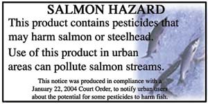

As the result of a lawsuit brought against the U.S. Environmental Protection Agency by consumer and environmental groups, shoppers at home and garden centers on the West Coast will be able to make more informed product choices and help support cleaner, safer waterways. Hundreds of products known to harm salmon and salmon habitat must now carry a warning label. All products containing malathion, carbaryl, 2,4-D, diazinon, diuron, triclopyr or trifluralin will be labeled as a “Salmon Hazard.” Learn more at http://watoxics.org/pages/root.aspx.
|
 Learn more about the Salmon Hazard warning program at www.watoxics.org. |
|
|